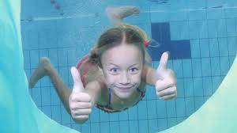
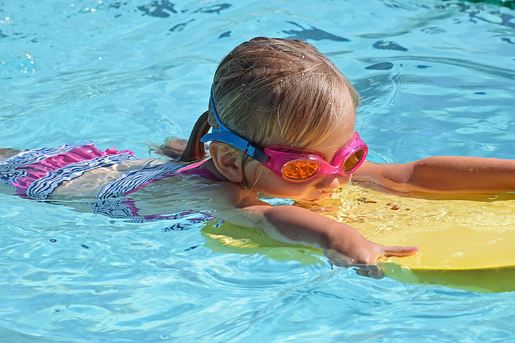
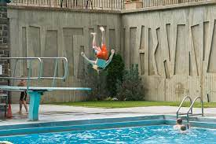
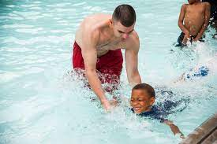

Underwater Breathing
Breathing underwater is a very important skill that we need to be able to learn how to swim. We help the kids first get into the water and then we practice with them so that they can learn how breath underwater. 1 minute to 30 second is our goals
Learning to float
Floating is an important skill to learn. To help our kids learn how to float we use floating so they can learn the fundamentals and then help them make that jump. To learn to float is so important and necessary for any swim survival
Jumping of the Diveboard
For some kids its very daunting for them to jump off the dive board. Our job is to helps our kids to overcome their fears and not drown. We first help them with jumping into the deep end, then we teach them the fundamentals and then we help them make that jump.
Swiming Strokes
We then help them do swimming strokes. Some of the swimming strokes that we help our kids learn are the breathstrokes, side stroke and backstroke. We help the learn and master these strokes